- Severanceseries
- Nausicaä of the Valley of the Windfilm
- Abstract: The Art of Designseries
- Kiss the Grounddocumentary
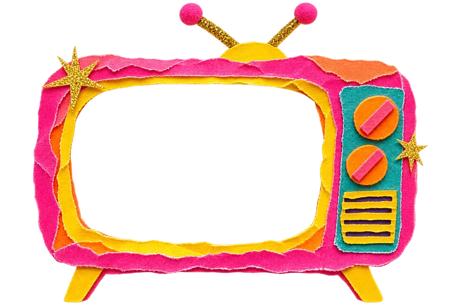
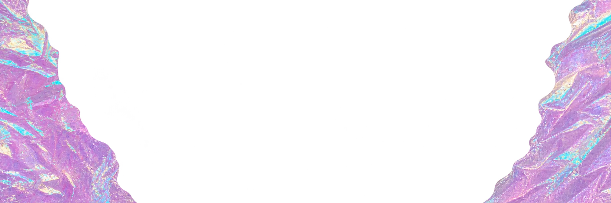
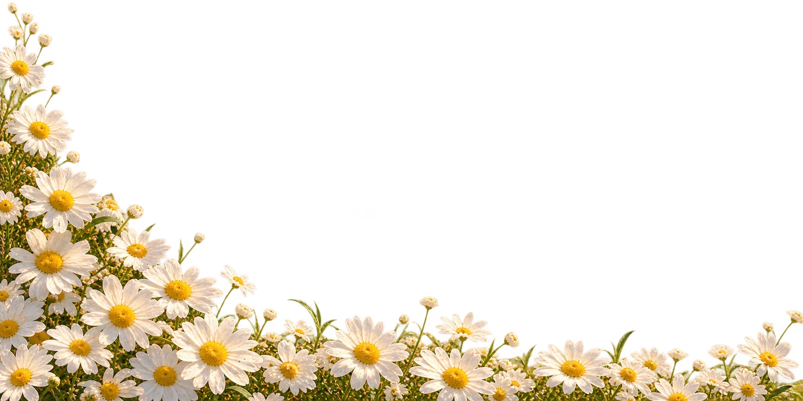
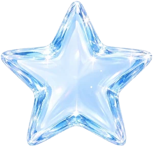
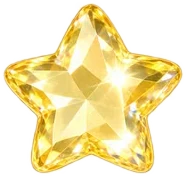
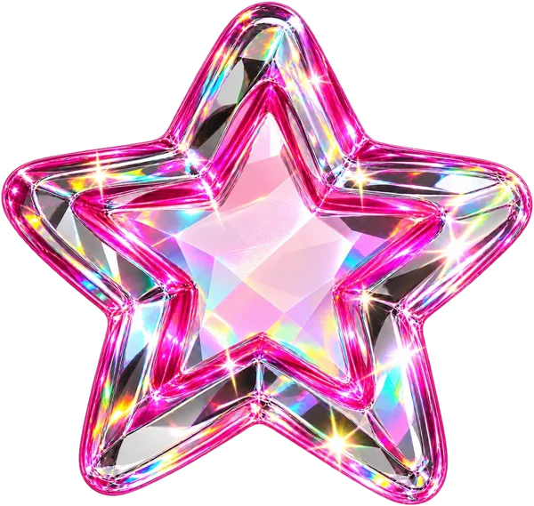
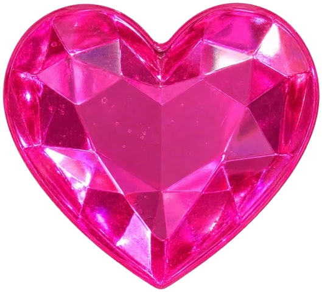
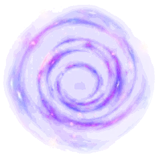


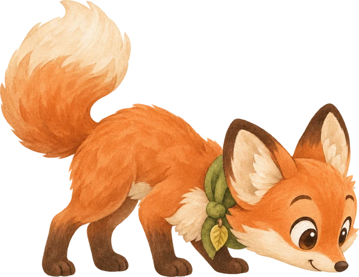
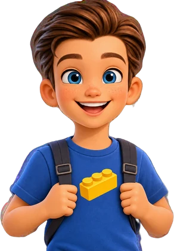

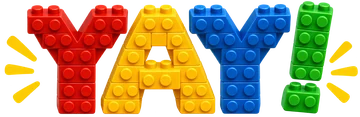
The games I make for my boys.


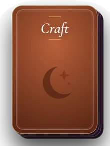
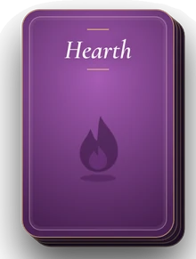
My current ventures, client projects and collaborations.
Always interested in connecting with people building interesting things.
lindsayomorton@gmail.com
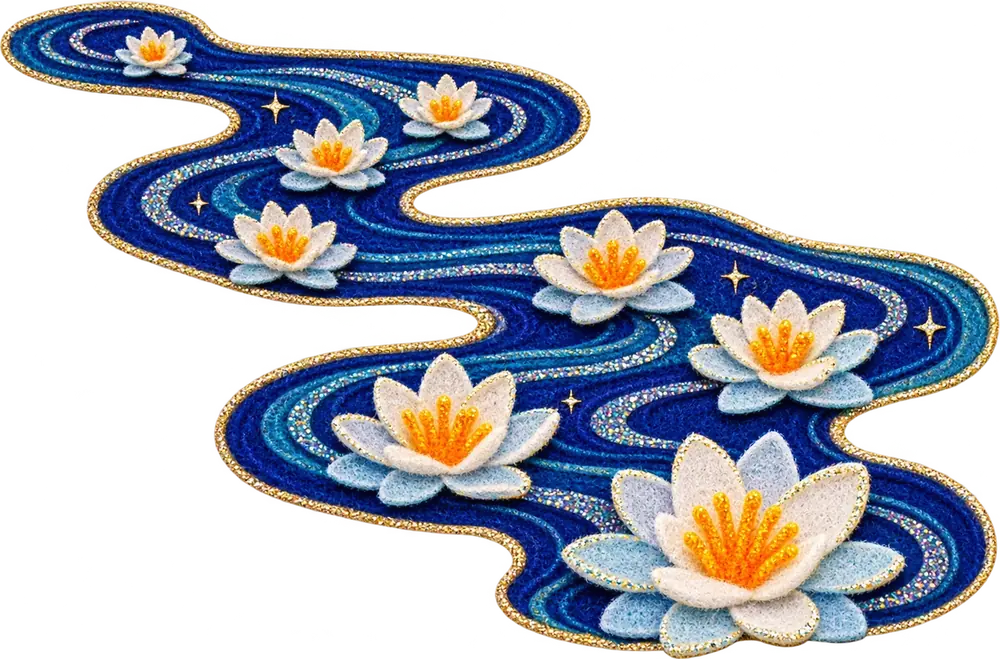
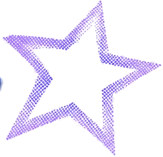
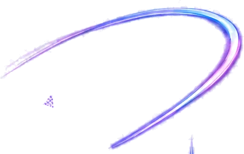
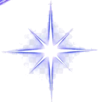
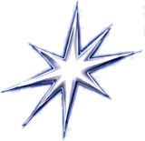
Currently bringing a new product to market.
Interested in conversations around:
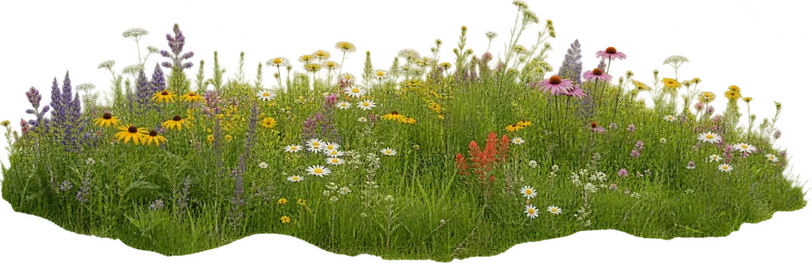
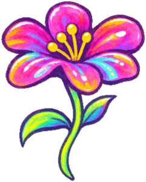
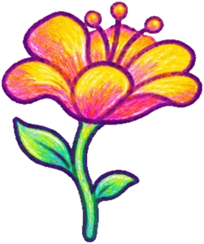
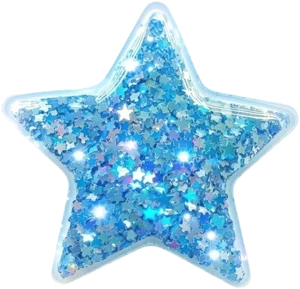
The things I make when nobody asked.
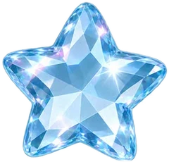

Ideas are my favorite thing. Send me yours: a project, a role, a brand that needs a pull. I read every one.
Rather email? lindsayomorton@gmail.com
I grew up on MySpace and worked with brands to be found on StumbleUpon. I’m a digital kid who mourns the loss of an informational, magical internet.
I believe the brands, people and ideas that will cut through the overwhelming noise will be whimsical, memorable and unique.
Ideas are my favorite thing. Send me yours: a project, a role, a brand that needs a pull.
lindsayomorton@gmail.com
For 15+ years I've led brand, demand generation and go-to-market for B2B technology, AI, SaaS, healthcare and consumer businesses.
Ask anything about my experience, or paste a job description and get a version of my résumé tailored to it.
Answers come only from Lindsay's real résumé.
The assistant won't make up roles, numbers or skills.
The assistant works when this page is opened in Claude.
You can still download the résumé or reach Lindsay on LinkedIn.

🔒 Access code required. This project is private. Enter the code to step inside.